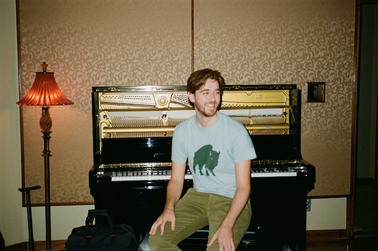

Dan Peters was born and raised in coastal Massachusetts. He moved to Austin in 2020 to pursue dual passions as a musician and an environmental scientist. Formally trained in jazz piano, he plays keys with several Austin groups including Nossas Novas, a Brazilian bossa nova and tropicalia band.
As a songwriter, Dan gravitates towards his folk and Americana influences (Wilco, John Prine, and Big Thief to name a few), weaving memorable melodies with thoughtful lyrics that convey a knack for finding meaning in everyday observations. Dan’s 2023 Ocean and the Wind EP is a fitting debut showcasing Dan’s ability to tell emotional stories full of natural imagery.

in the press
kutx98.9
Song of the Day: Dan Peters, "Jenny Lake"
A KUTX ("the Austin Music Experience") write-up of Dan's 2023 single Jenny Lake when it was featured on the radio as song of the day.
Austin American-Statesman
As Austin celebrates Brazilian Independence Day, a local bossa nova music scene blooms
A deep dive into Austin's Brazilian music scene, featuring Nossas Novas, the band Dan performs in on keyboards.